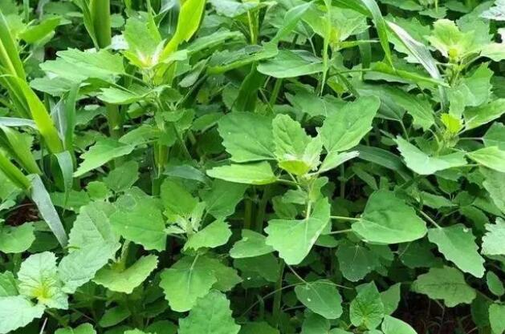

叶片布满“灰尘”的灰条菜，却是美味野菜
雨过了，天晴了，郊外又出现了三三两两采挖野菜的人。
每到春天，正是万物复苏的好季节，郊外的草地上，道路边，树林边，又出现了很多嫩嫩的野菜。当然，山里的野菜更多，它们很多都会选择在这个时候生长，它们精力充沛，生长旺盛，几乎都能在山野间发现它们的踪迹。

在很久以前，有一些贫困的农村人，从小就是以野菜为主，以此来解决一日三餐温饱的问题。在以前那个年代，几乎每一家的人口都是比较多的，那时候的经济发展还不是很发达，大多数人就只能靠野菜和各种面类食物来充饥。对口味的要求并不是很高，对于他们来说，只要是能吃的东西都不会挑剔，能填饱肚子就行。
但是，如今苦难的日子已经过去，人们都迎来了富裕的生活，然而野菜并没有被人们遗忘。吃腻了山珍海味的人，总喜欢在春天到郊外、到山中寻找一些野菜，因此野菜也成为了人们的一种美食，普遍受到人们的喜爱。就连一种叶片上布满了“灰尘”的野草，也备受关注。蔬菜有灰都会被嫌弃，而这种叶片布满“灰尘”的野草却成了美味的野菜，它的名字叫灰灰菜!
本站文章均来自互联网，仅供学习参考，如有侵犯您的版权，请邮箱联系我们删除！
 上一篇
上一篇